2.0.0
Edk2Code sidebar
The extension now lives in a dedicated activity bar container. All Edk2Code views (Workspace, Module Info) are grouped together in the sidebar instead of being attached to the Explorer view.
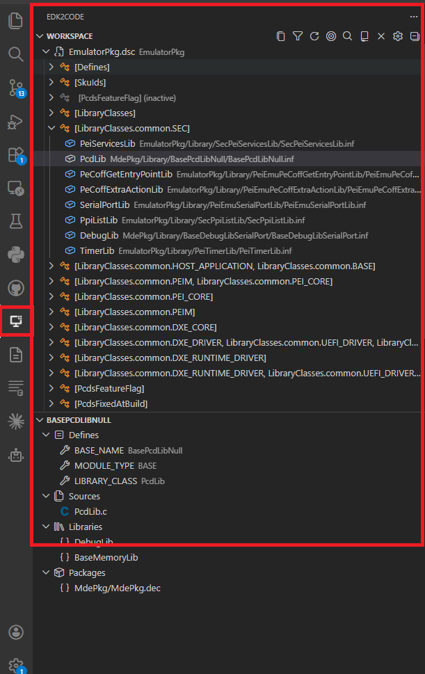
Workspace view
The new Workspace view is a single, persistent tree representation of your parsed EDK2 workspace. It replaces the previous Module Map, Reference Tree and Library Tree commands.
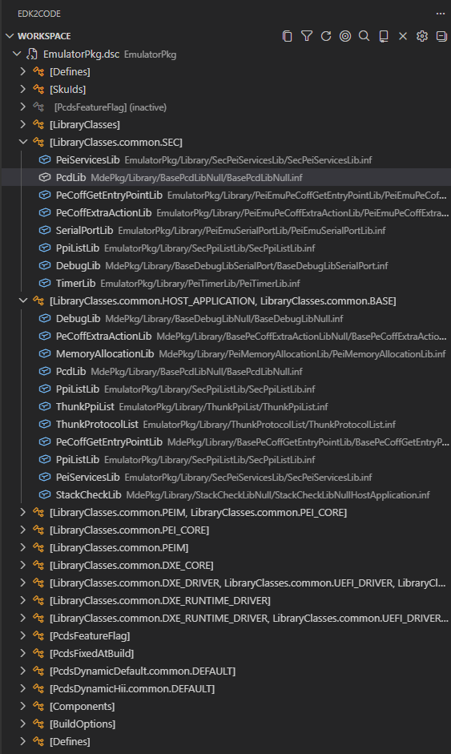
Key capabilities:
- Sub-trees and includes — DSC, INF, FDF and source files are organized hierarchically. Header includes and library sub-trees are integrated into the tree.
-
Search — Click the
$(search)action in the view title bar to find any node in the workspace tree.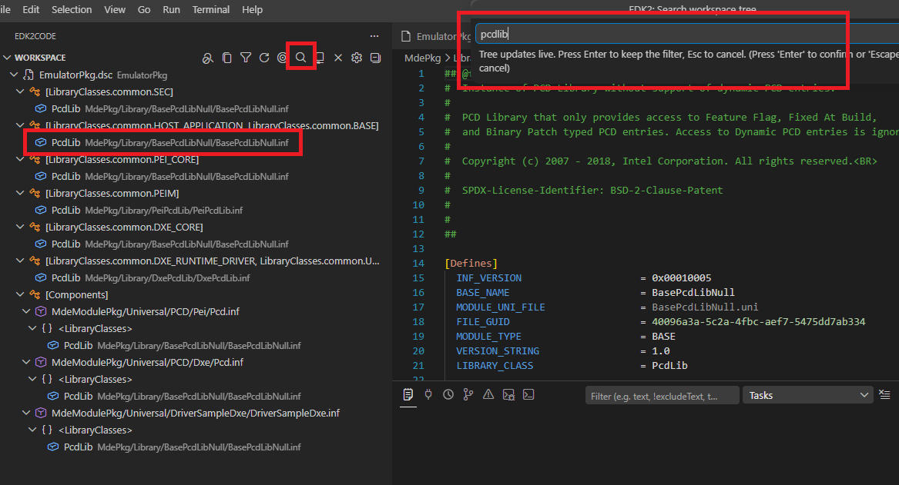
-
Filter inactive elements — Toggle the
$(filter)action to hide grayed-out (inactive) items.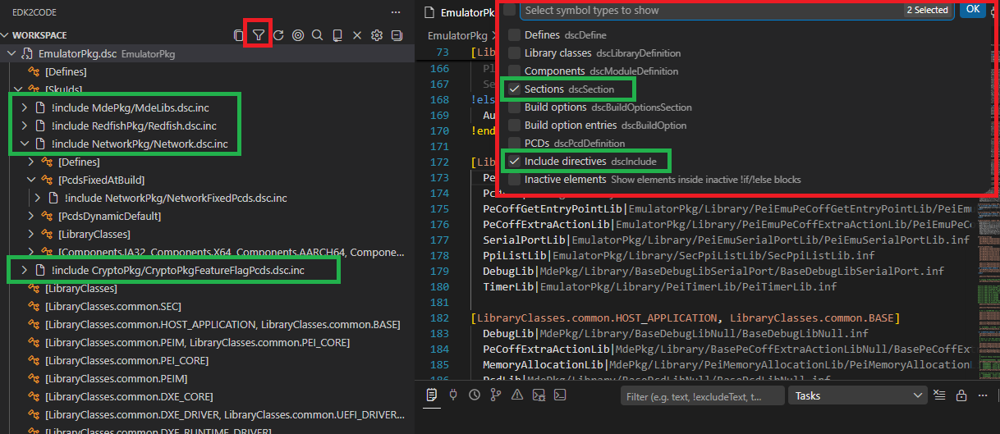
-
Reveal active editor — The
$(target)action jumps from the currently open file to its location in the workspace tree.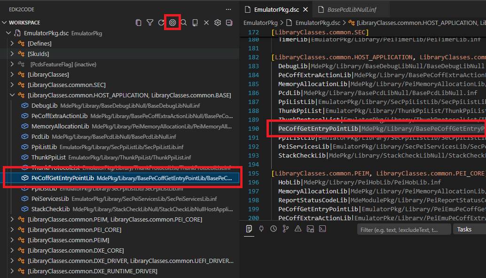
-
Drag and drop — Reorganize nodes in the workspace tree directly with the mouse.
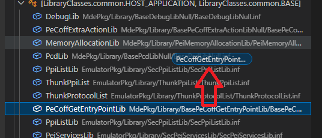
-
Multiple workspaces — When multiple build configurations are loaded, switch between them from the
$(repo)action in the title bar. Searching for symbols automatically switches to the workspace that owns the result.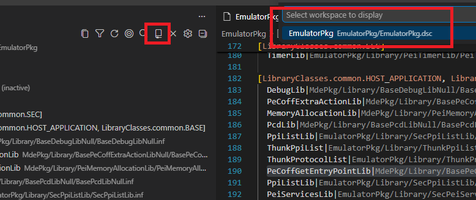
-
Copy node path / Copy tree — Quickly copy the path of a node, or export the entire tree as text via the
$(copy)action. -
Welcome view — When no workspace is loaded, the view guides you through discovering build folders or opening the configuration UI.
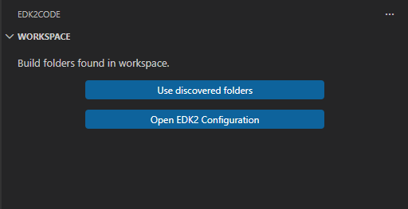
Module Info view
The new Module Info view shows the EDK2 module information for the file you are currently editing. As soon as you open a C, INF or related source file that belongs to a module, the view populates with:
- The owning INF and its DSC declaration
- Libraries linked to the module
- Quick navigation actions (go to definition, open file, go to DSC declaration)
Double-click any entry to jump directly to the corresponding source location.
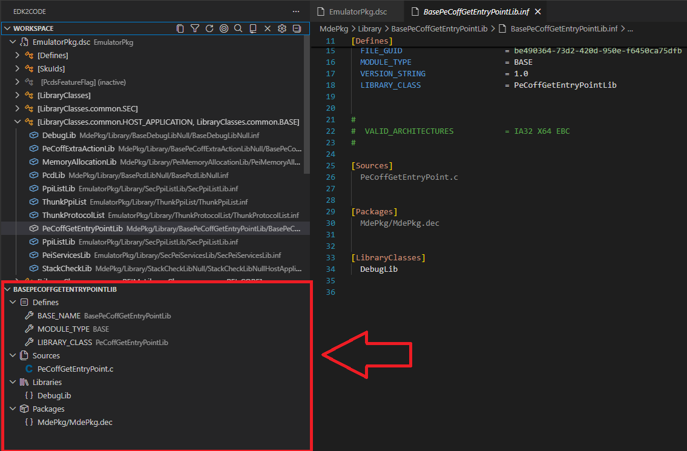
Build folder auto-discovery
EDK2Code can now scan your workspace and automatically detect existing build output folders, so you don't have to point the extension at them manually.
- Run
EDK2: Discover build foldersto scan the workspace. - Once discovered, run
EDK2: Use discovered build foldersto load them directly. - The Workspace view welcome page surfaces these actions when nothing is loaded yet.
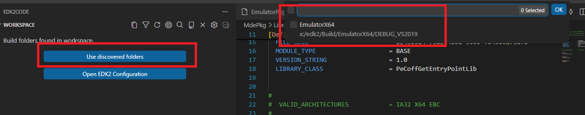
Compile EDK2 file
You can now compile an individual EDK2 file (e.g. a .c belonging to a module) directly from the editor.
- A play (
$(play)) icon is shown in the editor title bar on supported source files. - The command
EDK2: Compile Edk2 fileinvokes the build for the parent module of the active file.
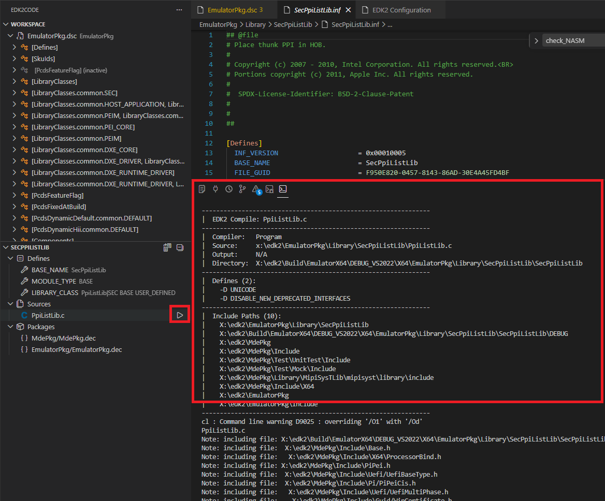
MCP server integration
EDK2Code now exposes an MCP (Model Context Protocol) SSE server that lets AI agents and external tools query your parsed EDK2 workspace.
- Start with
EDK2: Start MCP SSE Serverand stop withEDK2: Stop MCP SSE Server. - Configure the listening port via the
edk2code.mcpServerPortsetting (default3100).
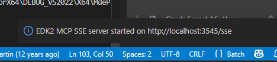
Settings UI
A redesigned graphical Workspace configuration (UI) panel makes managing build configurations easier — no more hand-editing JSON for common setups.
- Launch from the Workspace view title bar (
$(gear)icon) or via theEDK2: Workspace configuration (UI)command.

Goto overwriting definition
When a symbol is overwritten in a DSC (libraries, PCDs, modules), a new code action lets you jump directly to the overwriting definition.
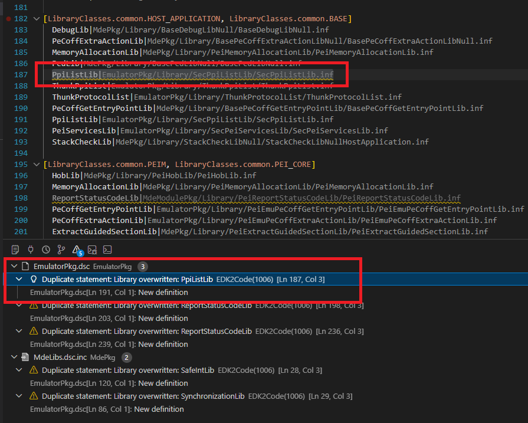
Other improvements
- Disable cscope — A new
edk2code.useCscopesetting lets you turn off cscope integration entirely. When disabled, the cscope database is not built or queried (call hierarchy and cscope-based go-to-definition become unavailable). - Unload workspace — New
EDK2: Unload workspacecommand to clear the currently loaded build configuration. - Refresh workspace config — Reload the workspace configuration without restarting VS Code.
- Focus INF from C files — Improved navigation from C source files back to their owning INF module.
- Better module symbols — DSC parser now recognizes module sub-context sections, build options, and provides improved symbols for libraries and modules.
- Loading and discovery indicators — Progress indicators are shown while the workspace is being parsed or build folders are being discovered.
- Improved grayout controller — Inactive code regions are computed and updated more reliably.
- Path improvements — Missing paths now report folders instead of file names, and tooltips include the full path.
- Extensive test suite — New parser and workspace tests covering ASL, DEC, DSC, FDF, INF and VFR.